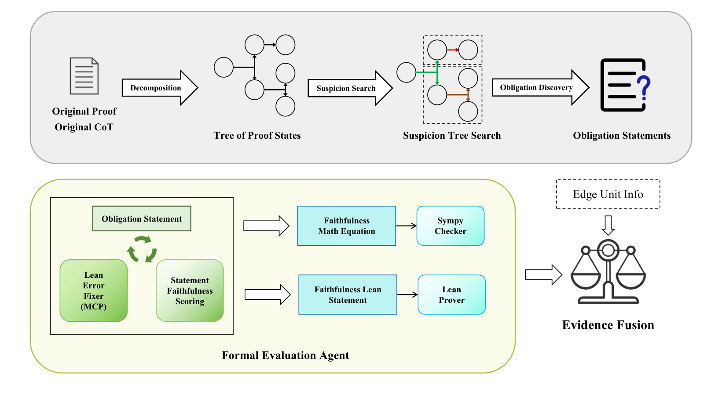

Autoformalizes local proof obligations from natural-language proofs into Lean and validates them with a Lean-assisted agent, gated by semantic faithfulness scoring.
Abstract
Large language models can now generate complex, multi-step mathematical proofs, but reliably determining their correctness and localizing early logical errors remains a critical challenge. Existing evaluation approaches largely depend on model-based natural-language judgments, which often overlook local reasoning gaps. While formal theorem provers like Lean offer a path to rigorous verification, using them to evaluate informal text requires solving locality and semantic mismatches: a prover might bypass a local flaw by proving an overly broad target, or validate an auto-formalized statement that drifts from the original mathematical intent. To address this, we introduce FaithSieve, a Lean-assisted framework for fine-grained evaluation of natural-language mathematical proofs. FaithSieve decomposes coarse proof steps into local reasoning units, extracts typed proof obligations, and verifies them through a formal evaluation agent. Formal validation is gated by semantic alignment scoring, so Lean evidence is incorporated only when the formal statement faithfully preserves the context, objects, and logical form of the original claim. We construct two expert-verified datasets, ProofLoc-Olympiad and ProofLoc-University, to benchmark first-error localization. On the 350-problem Olympiad dataset, FaithSieve using a GPT-5.4 backbone achieves 81.43% exact first-error accuracy, outperforming the direct-judging baseline of 72.29%. Furthermore, on the 200-problem ProofLoc-University benchmark spanning six advanced domains, FaithSieve reaches 84.5% exact accuracy, compared to 75.0% for the direct judge. Our work demonstrates that decomposing proofs into fine-grained units and grounding them with faithful formal evidence significantly improves reliable evaluation of natural-language reasoning.
Problem
LLM-generated natural-language math proofs are hard to evaluate, especially when locating the first erroneous step. Using Lean directly is unreliable because autoformalized statements may be overly broad or may drift from the original claim.
Approach
FaithSieve decomposes coarse proof steps into a tree of proof states and local EdgeUnits, then extracts typed proof obligations from suspicious transitions. A formal evaluation agent generates Lean statements for these obligations and attempts to verify them. Lean evidence is used only when a semantic faithfulness score (premise, conclusion and holistic fidelity) confirms the formal statement preserves the original claim. The local evidence is then fused into a first-error prediction.

Figure 1: Overview of the FaithSieve workflow for Lean-assisted first-error localization.
Results
On the new expert-verified ProofLoc-Olympiad dataset (350 problems), FaithSieve with GPT-5.4 reaches 81.43% exact first-error accuracy versus 72.29% for direct judging. On ProofLoc-University (200 problems) it reaches 84.5% versus 75.0%. Ablations show that local units and the semantic gate both contribute.